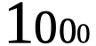
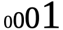

1. Transparência de Distribuição
Como visto anteriormente, parte da definição de sistemas distribuídos é que eles normalmente se apresentam como um sistema único aos usuários, ocultando o fato de processos e recursos estarem fisica e muitas vezes geograficamente distribuídos [SDPP]. Tal característica define o sistema como transparente [SDCP]. Transparência neste contexto então significa que o programador e/ou usuário não pode ver ou identificar que o sistema é distribuído. As principais formas de transparência são: acesso, localização, migração/mobilidade, relocação, replicação, concorrência e falha. [SDCP] [SDPP]
1.1. Transparência de Acesso
Visa ocultar diferenças na representação de dados e acesso a recursos quando estes são transmitidos de uma máquina para outra com arquiteturas e/ou sistemas operacionais diferentes [SDPP]. Diferentes sistemas e arquiteturas de hardware podem adotar padrões diferentes de dados. Este é o caso dos padrões big endian e little endian que definem a ordem de bits em um byte. Tal padrão é chamado de byte order ou endianness. Processadores Intel adotaram little endian e muitos outros seguiram este padrão. Os protocolos TCP/IP seguem o big endian, também chamado de network byte-order (ordem de bytes da rede).
Por exemplo o valor decimal 1000 poderia ser representando, da direita pra esquerda, em diferentes ordens de bytes:
-
, sendo representado do dígito menos significativo pro mais significado (little endian, o formato que nós humanos usamos pra representar números);
-
, sendo representado do dígito mais significativo pro menos (big endian).
Bits ou dígitos mais significativos são aqueles que têm maior valor. Se pegarmos um valor em base decimal como 4263, 4 é o mais significativo pois está na casa de milhares, enquanto 3 é o menos por estar na casa das unidades. Assim, nós humanos representamos números arábicos e romanos em little endian. Sem saber qual a ordem dos bytes, não há como dizer se um valor decimal recebido como 0001 equivale a 1 ou 1000. Este padrão determina de fato como os bytes são ordenados na memória.
Como apresentado, a transmissão de dados usando TCP/IP é feita em big endian mas os processadores como Intel usam little endian. No entanto, ao usar ferramentas de alto nível como middlewares, não temos que nos preocupar com isso. Desta forma, tais middlwares fornecem transparência de acesso. Se estivessemos capturando dados diretamente da camada de rede (ou que foram obtidos de tal camada e gravados em arquivo), aí sim teríamos tais preocupações.
Diferentes linguagens de programação podem ter formatos distintos para números, strings, booleans e outros dados. Por exemplo, em C, boolean é representado como um número inteiro. Em Java temos um tipo boolean específico. Strings em C são um vetor de caracteres terminados com \0. Em Java não há tal caractere no final das Strings.
Em [SDCP] ainda é citado que a transparência de acesso permite que não haja distinção nas operações para acesso a recursos locais ou remotos. Desta forma, nem o programador tem que usar operações (funções) diferentes para tais acessos. Os usuário e aplicativos não devem perceber se estão acessando um recurso local ou remoto.
Recursos como a Otimização de Armazenamento introduzido no macOS garantem transparência de acesso. O usuário salva um arquivo local e, caso o sistema comece a ficar com pouco espaço em disco, o arquivo é automaticamente movido para a nuvem, mas continua sendo acessado como se fosse um arquivo local.
Conveções de nomes de arquivos também devem ser ocultados de usuários e aplicações [SDPP]. Servidores web fazem isso. Por exemplo, no Windows é usada \ para separar diretórios, enquanto no Linux é usada /. Mas na web, o padrão é / independente de qual seja o sistema operacional do servidor.
1.2. Transparência de Localização
Visa ocultar dos usuários e aplicações a localização de um recurso [SDPP], ou seja, o conhecimento de sua localização física ou na rede (endereço IP) [SDCP]. A localização física inclui localização geográfica e o servidor onde o recurso está disponível.
Uma das formas de se conseguir transparência de localização é atribuindo nomes lógicos aos recursos [SDPP], que funcionam como apelidos (alias). Os endereços URL (Uniform Resource Locator) são a forma mais conhecida para se obter transparência de localização. Um endereço como http://google.com/index.html não indica: qual servidor hospeda o arquivo index.html, se tal arquivo sempre esteve neste servidor [SDPP], ou até mesmo se o arquivo está hospedado em vários servidores e o servidor mais próximo do usuário ou menos sobrecarregado atendeu à solicitação de acesso ao arquivo.
2. Transparência de Migração/Mobilidade e Relocação
Visa permitir que um recurso seja movido para outra localização sem afetar a forma como os usuários acessam tal recurso [SDPP] nem o funcionamento de programas [SDCP]. Se o recurso puder ser movido enquanto estiver em uso, sem que usuários ou aplicações percebam tal operação, então temos transparência de relocação [SDPP].
Servidores web por meio do protocolo HTTP permitem transparência de migração. Ao acessarmos uma página web como http://palmas.ifto.edu.br/cursos.html, se o arquivo cursos.html foi movido para /cursos/index.html, podemos utilizar o código HTTP 301 no servidor para indicar que a página foi movida e redirecionar automaticamente o usuário para o novo endereço.
Uma das grandes vantagens da computação em nuvem é a transparência de migração e de relocação. Provedores de computação em nuvem tradicionalmente utilizam tecnologia de virtualização para que um servidor seja compartilhado por múltiplos clientes. Tal tecnologia utiliza máquinas virtuais (VMs) para permitir que cada cliente possa instalar as aplicações que desejar, sem interferir no ambiente de outros clientes. Os provedores realizam a migração de máquinas virtuais de um servidor para outro, garantindo que os usuários vão continuar acessando tais VMs da mesma forma que antes, tendo então transparência de migração.
| Lembre-se que compartilhamento de recursos é uma das características de sistemas distribuídos. |
Migração de VMs (VM migration) é uma tarefa rotineina na nuvem para permitir um uso mais eficiente dos recursos computacionais. Por exemplo, se um servidor onde uma VM ou conjunto de VMs está executando está subutilizado, tais VMs podem ser migradas para outro servidor, desligando-se o anterior. Com isto, diminuimos a quantidade de servidores ligados e consequentemente custos com consumo de energia. Adicionalmente, o recurso de migração ao vivo de VMs (live VM migration) permite que uma VM seja migrada para outro servidor enquanto ela está em uso, garantindo transparência de relocação.
Em [SDPP] é comentado que o uso de dispositivos móveis como laptops é um exemplo de transparência de relocação, onde os usuários podem ir de um lugar a outro sem ao menos se desconectar. No entanto, isto é mais uma realidade de dispositivos como smartphones conectados a redes móveis como 3G/4G. No caso de laptops usando WiFi, comumente a conexão cai ao sair de um Access Point para outro e o usuário realmente percebe a queda da conexão. Trabalhos como o protocolo SMIP permitem mobilidade em redes WiFi e 3G/4G para evitar a perda de conexão. Com isto, temos de fato transparência de relocação entre diferentes tecnologias de redes.
3. Transparência de Replicação
Visa criar cópias de um recurso em diferentes locais para aumentar a disponibilidade ou desempenho, colocando uma cópia do recurso perto de onde ele é acessado, sem que os usuários, programadores ou aplicativos tenham conhecimento das réplicas [SDPP] [SDCP]. Isto implica que a transparência de replicação normalmente requer transparência de localização [SDPP].
Transparência de replicação é outro recurso fundamental da computação em nuvem. Em provedores que fornecem Software como Serviço (Software as a Service - SaaS), como é o caso da Google e seus diversos aplicativos, máquinas virtuais executando os softwares podem ser replicadas para atender a um aumento da demanda de usuários. No entanto, os usuários das aplicações não têm conhecimento da replicação de tais VMs. Um usuário do Brasil ao acessar um serviço como o GMail pode ser atendido por uma VM executando em um servidor no Brasil, enquanto um usuário na europa pode ser atendido por uma VM na europa. Mesmo dentro da europa, a solicitação de acesso à um serviço pode ser direcionada para uma VM no país mais próximo do usuário.
No caso da replicação de servidores web/servidores de aplicação, a transparência de replicação é conseguida por meio de um balanceador de carga, como discutido na seção de escalabilidade. Este vai determinar automaticamente para qual servidor um usuário será direcionado, sem que o usuário saiba que existem vários servidores.
No caso de bancos de dados replicados, a transparência de replicação é provida à aplicação pelo SBGD. A aplicação apenas envia ou recebe dados do banco, sem ter conhecimento da existência ou não de réplicas. Quando um dado é enviado ao banco, o SGBD é que lida com as réplicas.
4. Transparência de Concorrência
Já sabemos que o compartilhamento de recursos em sistemas distribuídos traz muitas vantagens. Um exemplo é o compartilhamento colaborativo de documentos [SDPP] com o Google Docs. No entanto, determinados recursos precisam ser compartilhados de forma competitiva (concorrente) [SDPP]. Recursos escassos normalmente são compartilhados desta forma. Exemplos incluem recursos físicos como CPU. Em geral, um mesmo núcleo de uma CPU não pode ser usado simultaneamente por dois processos. Uma excessão são as CPUs atuais com tecnologia como Hyper Threading, que pemitem a um núcleo executar mais de uma tarefa simultaneamente (com suas devidas limitações). Como a quantidade de tarefas executadas por um sistema operacional é em geral maior que a quantidade de núcleos de CPU existentes, as tarefas precisam concorrer para usar a CPU.
Tradicionalmente, um sistema operacional permite que uma tarefa use a CPU por um determinado período de tempo (chamado de quantum ou time slice). Quando o tempo expira, a tarefa é pausada e vai para o final de uma fila. Em seguida, outra tarefa passa a usar aquele núcleo . Desta forma, a execução das tarefas é feita de forma alternada, que chamamos de preemptiva. Os sistemas operacionais tornam transparente esta concorrência pela CPU. O programador não necessariamente tem que se preocupar com concorrência quando está criando uma aplicação convencional que utiliza apenas um núcleo da CPU. No entanto, quando o recurso de Threads é usado para permitir a execução de tarefas em paralelo por várias CPUs, podem surgir preocupações com concorrência e perder-se transparência. A transparência pode ser perdida, principalmente, quando o programador precisa programar uma tarefa para aguardar a finalização de outra e assim obter resultados. Frameworks como o Apache Hadoop que comentamos na seção de Escalabilidade permitem a execução de várias tarefas de forma concorrente, garantindo a transparência.
Problemas de concorrência também surgem frequentemente quando várias Threads tentam acessar ou alterar as mesmas variáveis. Nestes casos, resultados inesperados e inconsistentes podem ocorrer. Para resolver tais problemas, existem mecanismos nas linguagens de programação para permitir sincronizar a execução de tarefas. Em Java por exemplo, se um método sendo executado por várias Threads acessa variáveis comuns e precisamos impedir que tais Threads acessem estas variáveis ao mesmo tempo (pois isso pode causar resultados inesperados), podemos marcar o método com a palavra reservada synchronized. Três aplicações de exemplo foram disponibilizadas que mostram como tal problema pode ocorrer e soluções para resolvê-los. Os exemplos são: ConcorrenciaAppProblemas.java, ConcorrenciaAppSolucao1.java e ConcorrenciaAppSolucao2.java.
Também existe concorrência quando múltiplos usuários tentam acessar um mesmo arquivo ou registro de um banco de dados. A transparência de concorrência faz com que um usuário não perceba que um recurso está sendo utilizado por outro usuário. Este acesso concorrente fica mais óbvio quando vários usuários tentam alterar simultaneamente um mesmo arquivo ou registro. [SDPP] As alterações precisam ser sincronizadas para garantir que os dados se mantenham consistentes [SDPP] e que as alterações de um usuário não interfiram nas de outro. Considere que dois usuários alteraram simultaneamente um arquivo e precisam salvar tais alterações como mostrado a seguir:
Documento Original |
Alterações do Usuário 1 |
Alterações do Usuário 2 |
AAAAAAA |
1111111 |
AAAAAAA |
Como podem ver, o usuário 1 alterou a primeira linha enquanto o usuário 2 alterou a segunda linha do arquivo. A concorrência neste caso pode fazer com que, o último usuário a salvar o arquivo faça as alterações do primeiro serem perdidas. O que poderíamos esperar é que as alterações de ambos os usuários fossem incluídas no arquivo, como mostrado a seguir.
Documento final esperado, contendo as alterações de ambos os usuários |
1111111 |
A transparência de concorrência precisa lidar com tais tipos de problemas. Ela precisa ainda garantir que o recurso (neste caso o arquivo) se mantenha consistente [SDPP]. Por exemplo, tentativas de alterações simultâneas não podem corromper o arquivo, tornando impossível ler seu conteúdo.
Locks são mecanismos de trava muito utilizados para dar acesso exclusivo a um recurso para um usuário [SDPP] [SDCP] ou aplicação, criando uma fila de espera para tal recurso. O uso de locks evita os problemas apresentados acima, porém, traz uma grande perda de desempenho pois não podemos atender vários usuários simultaneamente. Isto prejudica enormente a escalabilidade do sistema.
Sem o uso de transações com lock em aplicações de banco de dados, a alteração de um mesmo registro por vários usuários pode resultar em um usuário sobrescrevendo os dados fornecidos por outro. Este é o conhecido problema da atualização perdida: as atualizações de um usuário são perdidas quando outro usuário atualiza um registro [SDCP]. O vídeo a seguir exemplifica este problema.
Em [SDPP] é discutido que um recurso mais adequado para resolver este problema são as transações. Transações são muito conhecidas em bancos de dados e garantem que, ao executar um conjunto de operações, ou todas as operações são executadas com sucesso ou nenhuma delas é confirmada. No entanto, o livro deixa entender que transações são uma alternativa aos locks, quando na verdade, elas utilizam locks para garantir consistência dos dados. De fato, bancos de dados como MySQL e PostgreSQL permitem o uso de locks em transações para isto, por meio de comandos como select … for update.
Se você quiser verificar como funciona o mecanismo de lock do MySQL, pode acessar o script mysql-concurrency-lock.sh. Você apenas precisa ter o servidor MySQL instalado em uma máquina Linux/macOS. Ao executar o script com sh mysql-concurrency-lock.sh será mostrado como ele funciona e como deve proceder. Certifique-se de editar o script para informar a senha do usuário root do MySQL.
|
O livro cita ainda que implementar tal recurso em sistemas distribuídos é bastante desafiador. Mas é importante ficar claro que o desafio consiste em utilizar transações em um SGBD distribuído, onde um mesmo dado pode estar replicado em vários servidores. Imagine que uma atualização em um servidor precisa ser replicada pra outros servidores e ainda garantindo que:
-
ou todos os servidores são atualizados;
-
ou em caso de erro, as alterações confirmadas em qualquer um sejam desfeitas.
No caso de um banco de dados não distribuído, evitar o problema apresentado no vídeo acima é bem fácil. Bibliotecas de acesso a bancos de dados normalmente possuem recursos para lidar com alterações concorrentes, que são os locks otimistas e pessismistas. Este é o caso da Java Persistence API (JPA) que vai aplicar mecanismos de lock de acordo com o banco de dados sendo utilizado. O método otimista considera que alterações concorrentes ocorrem excepcionalmente. Tal método não usa locks do banco, mas normalmente requer um campo "versão" na tabela. Quando um usuário altera um registro em tal tabela, o número da versão daquele registro é automaticamente incrementando. Assim, se entre a leitura de um registro e a alteração do mesmo, a biblioteca detectar que o número de versão do registro mudou, é porque outro usuário alterou tal registro. Neste caso, é exibido um erro de modificação concorrente, indicando tal situação. Nestes casos, o usuário pode tentar novamente. [1, 2, 3, 4, 5]
O vídeo a seguir apresenta o locking otimista.
O método pessimista considera que há maior probabilidade de modificações concorrentes. Assim, ele usa o recurso de lock do banco para travar um registro até que as operações feitas por um usuário sejam finalizadas. Nestes casos, como já sabemos, isto reduz a escalabilidade do sistema.
Modificações concorrentes podem ser um grande problema, principalmente em sistemas financeiros e bancários [SDCP]. Sem o controle de concorrência, duas pessoas com cartões de uma mesma conta que possue apenas R$100,00 poderiam tentar sacar dinheiro duas vezes este valor.
5. Transparência a Falhas
Permite ocultar falhas para que usuários e programas consigam finalizar suas tarefas, sem mesmo perceberem que a falha ocorreu [SDCP]. Se um componente do sistema falhar, outro deve assumir automaticamente para tornar o sistema tolerante a falhas. Assim como escalabilidade não é infinita, a tolerância a falhas também não. Um sistema com um nível de tolerância a falhas k é capaz de continuar em funcionamento mesmo após k falhas. Isto indica que ele precisa de pelo menos k+1 elementos replicados (como servidores ou links de internet). Tal sistema é classificado como k-fault tolerant. A tolerância neste caso também inclui os clientes e usuários [SDCP]: o navegador envia uma requisição a um servidor e aguarda um determinado tempo pela resposta. Se o tempo expirar, ocorre timeout e uma mensagem de erro é exibida. Neste caso, o usuário tem a possibilidade de tentar novamente.
Replicação de componentes é um recurso apresentado para permitir a escalabilidade de um sistema, que também é fundamental para garantir tolerância a falhas. Com recursos como balanceamento de carga, quando um componente falha, as requisições dos usuários podem ser automaticamente redirecionadas para outro componente.
| Para detalhes sobre computação em nuvem e balanceamento de carga, veja seções 2.1 e 2.2 nesta dissertação de mestrado. |
Há ainda preocupações com recuperação de falhas. Se o sistema estava no meio de um processo que não foi finalizado, o estado de tal processo pode ser salvo para que possa ser resumido do ponto onde parou. Se alterações de dados foram concluídas apenas parcialmente depois de uma falha, as transações de banco de dados garantem que tais operações incompletas não sejam confirmadas. Assim, o sistema volta a um estado consistente depois de reiniciar. No caso de dados de requisições enviados pelo cliente que não foram persistidos no banco, após a falha, o cliente tem a possibilidade de tentar novamente e re-enviar os dados.